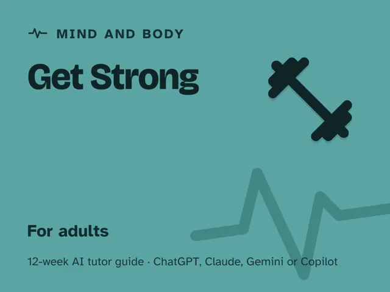

Get Strong
$29Instant download: a PDF to read, a browser copy, and the AI-tutor file you hand straight to any AI assistant.Buy it on Etsy →
Take the free placement check first: 15 minutes, and it names the week to start at.
A masterclass you actually finish. Most strength programs hand you a spreadsheet of exercises and hope for the best; this one teaches you the principles first (how muscles actually get stronger, the five movement patterns every lift is built from, and how to gauge effort without a coach in the room), so you can train yourself safely for the rest of your life, not just for 12 weeks. You describe what you did and how it felt, the AI tutor asks questions until your form and effort are dialed in, then you progress in small, checked steps.
Format: a digital guide with 12 ready-to-run ~60-minute weekly sessions, fully scripted with an AI coach. No gym membership or special equipment required to start.
What you get
- A digital guide: 12 ready-to-run ~60-minute weekly sessions. Each one gives you a plain-language concept, a concrete worked example, a minute-by-minute session plan with the AI-tutor prompts built in, a "show me" checkpoint, common mistakes to watch for, and practice.
- An orientation that starts where every safe program starts (understanding progressive overload) and the one rule that keeps you training for decades, not weeks: form and pain signals come before load. It also includes a "Never used an AI chat assistant? Start here" walkthrough that gets a complete beginner from zero to ready in about five minutes, using a free AI assistant. No paid plan needed.
- Four rescue prompts built into the front matter: prompts for when you're stuck, sore, or overwhelmed, when the AI starts prescribing without checking your form, when you plateau, and to check you truly understand, plus a pain-vs-effort safety guardrail that tells the AI to stop you at pain and never suggest working through it.
- A self-built beginner program you design, run, and honestly track across the season, plus a personal 12-week progression plan to take with you.
The 12 weeks
- How Muscles Actually Get Stronger
- The Five Movement Patterns
- Form First: Moving Safely Under Load
- Reps, Sets & Effort
- Warming Up & Mobility
- The Push Pattern
- The Pull & Hinge Patterns
- The Squat & Carry Patterns
- Recovery, Sleep & Protein Basics
- Project Week I: Build Your Beginner Program
- Project Week II: Run It and Track Progress Honestly
- Demo Day and Your Sustainable Routine
Who it's for
Adult beginners who want to build strength safely and effectively: never lifted before, or lifted on and off without ever understanding why the program worked. If you can stand up from a chair and have a little floor space at home, you're ready; a phone camera or a mirror helps with form checks.
Why this instead of a free chatbot
A raw chatbot will hand you a random workout on request and call it a day. This pack ships the structure and guardrails it lacks: a first-principles method that teaches WHY before WHAT, a real 12-week progression from bodyweight to a self-designed program, and a tutor set up to ask about pain and form before ever adding weight, so you leave with a skill you can reuse forever, not just a routine that expires when the plan does.
Safety
This is educational content, not medical or professional coaching advice. Talk to a physician before starting a new exercise program, especially if you have an injury or health condition, are pregnant or recently gave birth, or are new to exercise. Learn each movement's form carefully (ideally with a qualified coach watching in person), and stop immediately at sharp or joint pain; normal muscular effort and mild soreness are expected, pain is not. Chest pain or pressure, fainting, or breathlessness far beyond the effort means stop at once and call your local emergency number if it's severe or doesn't settle quickly.
FAQ
- Do I need any experience? None, with strength training or with AI. Week 1 starts with bodyweight movements and a baseline log; every skill is broken into small, checked steps.
- Which AI does it use? I've never used one. Any modern AI chat assistant works: ChatGPT, Claude, Copilot, Gemini. The free version of any of these is enough; no paid plan needed. The guide's first section walks complete beginners through setup in about five minutes, and every session gives you the exact prompt to start it. Photo/video input helps but isn't required.
- Does it work outside the US? Yes. The guide is written in US English, and every prompt tells the AI to use your country or region for spelling, units (kilograms or pounds), money, and examples.
- Is this safe? Who's liable? It's educational only, not medical or coaching advice. Consult a physician before starting, learn proper form (ideally with a qualified coach), and stop if you feel pain rather than normal effort. You assume all risk; the author and the AI tutor are not liable for injury.
- Do I need a gym or equipment? No, the whole season works with bodyweight, a couple of household objects, and optionally a few basic weights if you want to add load sooner.
- Refunds? Standard marketplace refund policy applies.
$29Instant download: a PDF to read, a browser copy, and the AI-tutor file you hand straight to any AI assistant.Buy it on Etsy →